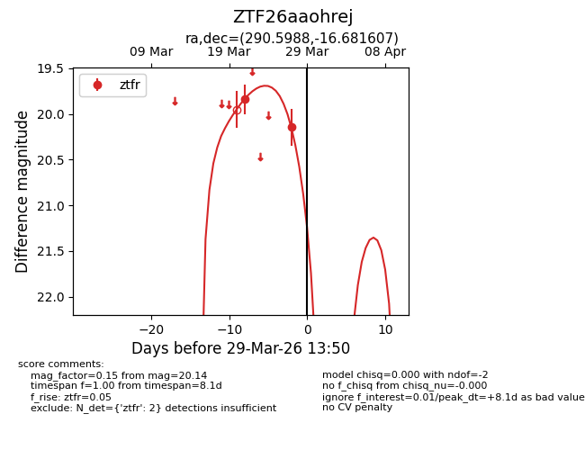
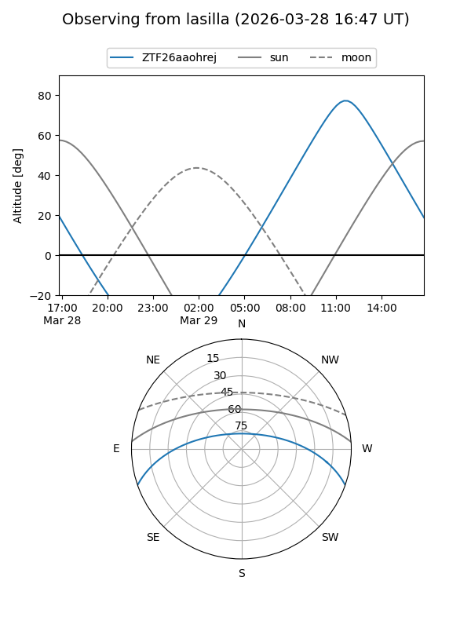
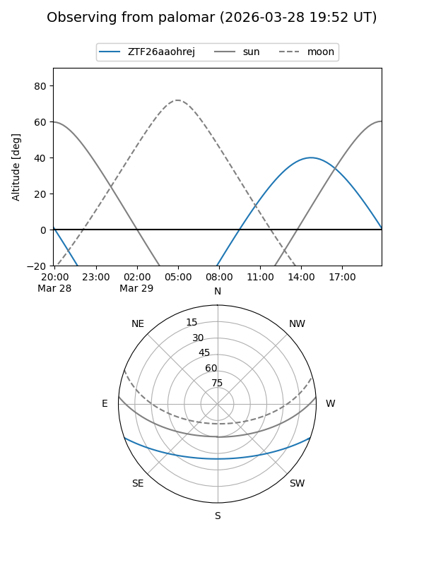
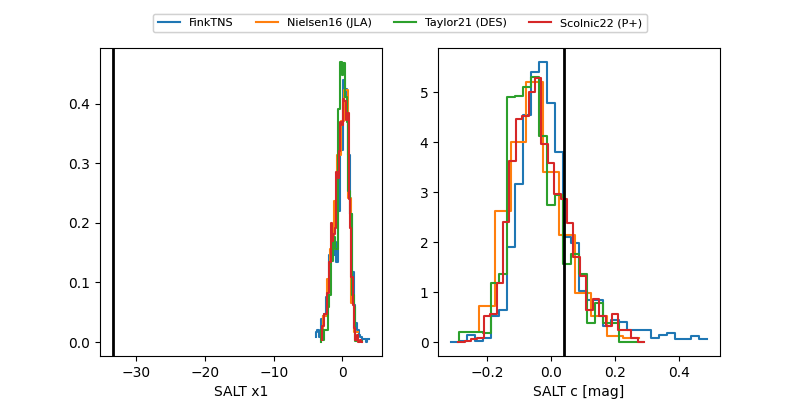

ZTF26aaohrej
Target ZTF26aaohrej at 2026-03-29 13:53
Aliases and brokers:
FINK: link
Lasair: link
ALeRCE: link
alt names
ZTF26aaohrej (ztf,fink_ztf)
Coordinates:
equatorial (ra, dec) = 290.5988,-16.68161
equatorial (HMS+DMS) = 19:22:23.71,-16:40:53.78
galactic (l, b) = (21.2270,-14.22315)
Flags:
Photometry:
last ztfr=20.14
2 ztfr detections
Lightcurve

Visibility


Additional plots
